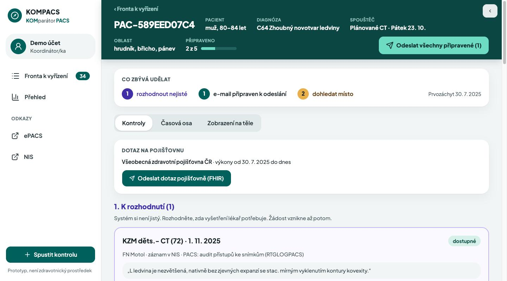

Žádné vyšetření bez srovnání.No exam without a comparison.
Před CT, MR, PET nebo MDT najde relevantní předchozí vyšetření, ověří je v PACS a vyžádá to, co chybí. Before a CT, MRI, PET or tumor board, KOMPACS finds the relevant prior exams, checks them in PACS and requests what is missing.
Hledám předchozí vyšetření…Searching prior exams… ● Nalezeno ve zprávě, chybí v PACSFound in a report, missing in PACS Žádost odeslána → dostupné v PACSRequest sent → available in PACS

Chybí starý snímek. Případ se odloží, sestra visí na telefonu.An old scan is missing. The case waits, a nurse hangs on the phone.
- 1Před CT nebo MDT chybí v PACS snímky pro srovnání.Before a CT or tumor board, the comparison scans are not in PACS.
- 2Kde vznikly, stojí jen ve větě ve zprávě.Where they were done is only a sentence in a report.
- 3Lékař odkládá, sestra volá, pacient čeká.The physician waits, a nurse calls, the patient waits.
případů v demo datech nemá snímek, který lékař potřebuje.cases in the demo data lack a scan the physician needs.
Radiologové milují v životě dvě věci: tmu a kompletní data pacientů. Bohužel, dnešní zdravotnictví jim většinou dopřeje jen tu tmu.
Radiologists love two things in life: darkness and complete patient data. Sadly, today's healthcare mostly gives them only the darkness.
Kontrola se spustí sama, ve chvíli objednávky.The check runs by itself, the moment an exam is ordered.
Přesně podle zadání FN Motol a Nemocnice Na Homolce:Exactly the workflow from the FN Motol and Na Homolce brief: 1 spouštěčtrigger → 2 co je relevantníwhat is relevant → 3 kontrola PACScheck PACS → 4 dohledáníresolution
Relevantní, nebo ne. S důvodem a citací Modré knihy ČOS.
Relevant or not. With a reason and a guideline citation.
Rozhodne nejisté. Schválí žádost jedním klikem.
Decides the uncertain ones. Approves the request in one click.
Snímky dorazí. Stav se přepne na „dostupné“.
Images arrive. The status turns “available”.
AI, která cituje zdrojAI that cites its source
Ke každému snímku důvod, větu ze zprávy a ověřenou citaci Modré knihy ČOS. Když si AI není jistá, rozhoduje člověk.
For every scan: a reason, the source sentence and a verified guideline citation. When the AI is unsure, a human decides.
Pacienti často zapomínají. Pojišťovna ale nikdy nezapomene, co komu zaplatila.
Patients often forget. The insurer never forgets what it paid for.
Data VZP: cílově od 1. 1. 2028 (konzultováno se zástupcem VZP). V prototypu simulovaná. VZP data: target 2028-01-01 (consulted with a VZP representative). Simulated in the prototype.
Očividné řešení by chybějící snímky nenašlo.The obvious solution would not find the missing scans.
Žádní AI roboti na telefonu. Přesný e-mail na jedno kliknutí.No AI robots on the phone. A precise e-mail in one click.
Představa, že se naše AI dovolá vrátnému a odrecituje mu rodné číslo a onkologickou diagnózu, je sice úsměvná, ale váš GDPR pověřenec by z toho měl infarkt.
Picture our AI reaching the hospital porter and reciting a birth number and a cancer diagnosis. Funny, yes. But your data protection officer would have a heart attack.
Dobrý den, pro plánované CT dne 23. 10. žádáme o zaslání snímků a popisu CT hrudníku a břicha z 12/2025 přes ePACS. Pacient: PAC-DEMO-001. Děkujeme.
Hello, for a CT planned on 23 Oct we kindly ask for the images and report of the chest and abdomen CT from 12/2025 via ePACS. Patient: PAC-DEMO-001. Thank you.
InterSystems IRIS for Health
HL7 v2 dovnitř, FHIR R4 uvnitř, vektorové hledání v IRIS.
HL7 v2 in, FHIR R4 inside, vector search in IRIS.
Data zůstávají v EUData stays in the EU
Text zpráv jen do modelu v EU Data Zone. Každé hodnocení AI má auditní stopu.
Report text goes only to an EU Data Zone model. Every AI verdict has an audit trail.
Rozhoduje člověkA human decides
AI navrhuje. Nic neodejde bez koordinátora. Prototyp, není zdravotnický prostředek.
AI suggests. Nothing leaves without the coordinator. Prototype, not a medical device.
Funkční systém, ne slajdy.A working system, not slides.
- Skutečná HL7 objednávka → IRIS → FHIR za ~1 s
- A real HL7 order → IRIS → FHIR in ~1 s
- AI hodnotí celý případ a cituje stránku Modré knihy
- AI judges the whole case and cites the guideline page
- Neověřenou citaci systém zahodí
- An unverified citation is dropped
- 89 461 vět ze zpráv jako vektory v IRIS
- 89,461 report sentences as vectors in IRIS
- Souhrn případu jako verzovaný FHIR dokument
- Case summary as a versioned FHIR document
- MCP server pro libovolného AI agenta
- MCP server for any AI agent
V prototypu simulujeme objednávky, data jiných nemocnic a pojišťovny a odeslání e-mailu.The prototype simulates orders, data from other hospitals and the insurer, and e-mail sending.
Celá historie na jedné ose. Červená vlajka, když chybí kritický snímek.The whole history on one timeline. A red flag when a critical scan is missing.
Interaktivní časová osaInteractive timeline
Snímky, zprávy, léčba, laboratoř. Hledání podle významu.
Scans, reports, treatment, labs. Semantic search.
2D anatomická mapa2D anatomical map
Svítí jen oblasti s doloženým vyšetřením. Chybějící červeně.
Lights up only areas with proven imaging. Missing ones in red.
Méně duplicit. Kratší čekání. Méně záření pro onkologické pacienty.Fewer duplicates. Shorter waits. Less radiation for cancer patients.
chybějících snímků nalezeno ve 40 případech
missing scans found in 40 cases
případů by začalo bez srovnání
of cases would start without a comparison
práce na 40 případů
work for 40 cases
odhadestimatetelefonátů ušetřeno
phone calls saved
odhadestimateNení vázaný na jednu nemocnici.Not tied to one hospital.
Nemocnice nic neměníThe hospital changes nothing
Připojí, co má: HL7 v2, FHIR, PACS feed.
It connects what it has: HL7 v2, FHIR, a PACS feed.
Jeden balík na nemocniciOne stack per hospital
On-prem nebo EU cloud. Podpora přes českého IT integrátora.
On-prem or EU cloud. Supported by a Czech IT integrator.
Funguje už dnesWorks today
Sdílení snímků přes EHDS přijde až v roce 2031.
Image exchange under EHDS comes only in 2031.
Tohle pro nás není jen víkendový hackathon.For us, this is not just a weekend hackathon.
Skutečné objednávky, klinické potvrzení AI.
Real orders, clinical sign-off of the AI.
Druhé pracoviště, napojení na ePACS.
Second site, connection to ePACS.
Cílově od 1. 1. 2028.
Target 2028-01-01.